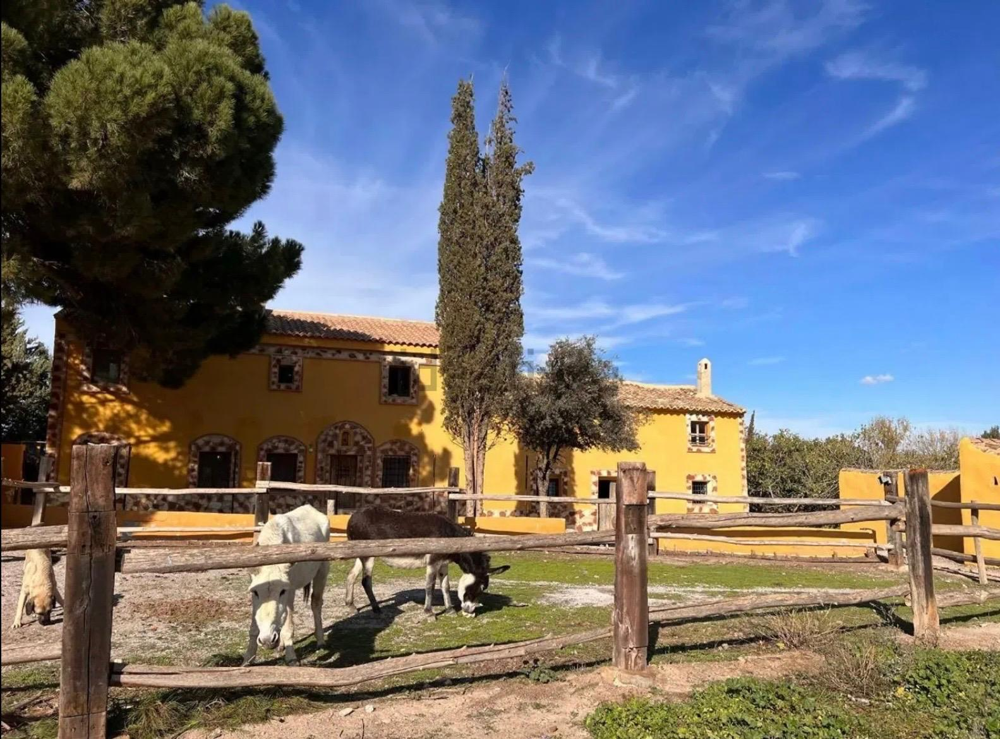

Nacho Ranch
Cañillas, Spanje
Camperplaatsen: website in aanbouw.
Camper pitches: website under construction.
Plazas para autocaravanas: web en construcción.

Cañillas, Spanje
Camperplaatsen: website in aanbouw.
Camper pitches: website under construction.
Plazas para autocaravanas: web en construcción.